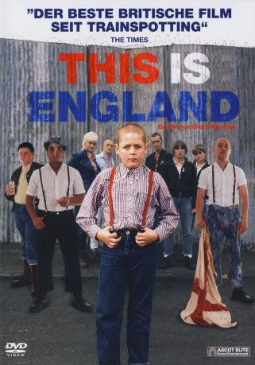

#9982 This is England - Ende einer Kindheit
Alternativ: This Is England
Auszeichnungen: 1 BAFTA-Awards gewonnen
 
 IMDB-Wertung: 7.7 / 10
IMDB-Wertung: 7.7 / 10  Metascore: 86
Metascore: 86 
Der zwölfjährige Shaun ist ein Außenseiter. In der Schule kann ihn nicht wirklich jemand leiden, sein Vater verstorben. Als ihn eine Gruppe Skinheads unter ihre Fittiche nimmt, wendet sich für Shaun das Blatt. Plötzlich gehört er irgendwo dazu.
Jahr: 2006
Dauer: 102 Minuten
FSK: 12
Land: England Studio: Ascot Elite Home EntertainmentTonspuren: DTS - ,
Untertitel:
Auflösung: 1080p (1920x1040) Größe: 9687 MB
Genre: Drama, Krimi
Regisseur: Shane Meadows
Drehbuch: Shane Meadows
Soundtrack: Ludovico Einaudi
Darsteller:
 Thomas Turgoose als Shaun
Thomas Turgoose als Shaun Stephen Graham als Combo
Stephen Graham als Combo Jo Hartley als Cynth
Jo Hartley als Cynth- Andrew Shim als Milky
- Vicky McClure als Lol
 Joseph Gilgun als Woody
Joseph Gilgun als Woody- Rosamund Hanson als Smell
 George Newton als Banjo
George Newton als Banjo Frank Harper als Lenny
Frank Harper als Lenny Jack O'Connell als Pukey Nicholls
Jack O'Connell als Pukey Nicholls- Chanel Cresswell als Kelly
- Hannah Walters als Shoe Shop Assistant
 Michael Socha als Bully
Michael Socha als Bully- Terry Haywood als Football kid
- Duran Duran als Themselves (archive footage) (uncredited)
- Simon Le Bon als Himself (archive footage) (uncredited)
- Prince Charles als Himself (archive footage) (uncredited)
- Princess Diana als Herself (archive footage) (uncredited)
 Ronald Reagan als Himself (archive footage) (uncredited)
Ronald Reagan als Himself (archive footage) (uncredited)- Margaret Thatcher als Herself (archive footage) (uncredited)
- Andrew Ellis als Gadget
- Perry Benson als Meggy
- Kriss Dosanjh als Mr. Sandhu
- Kieran Hardcastle als Kes
- Danielle Watson als Trev
- Sophie Ellerby als Pob
- Dave Laws als Mr. Dudley
- Ian Smith als Teacher
- Dave Blant als Teacher
- Matthew Blamires als Teasing kid
- James Burrows als Teasing kid
- Harpal Hayer als Football kid
- Nimesh Jani als Football kid
- David Claridge als Roland Rat (archive footage) (uncredited)
- Robert Stone als Man (uncredited)
Datei: X:\2006(N-Z)\This is England - Ende einer Kindheit (2006, FSK12, 1920x1040).mkv seit 15.11.2018
Festplatte: HD 2005(G-Z)-2006(A-Z)
 Es gibt insgesamt 62 Filme in der Gruppe '2006(N-Z)'
Es gibt insgesamt 62 Filme in der Gruppe '2006(N-Z)'